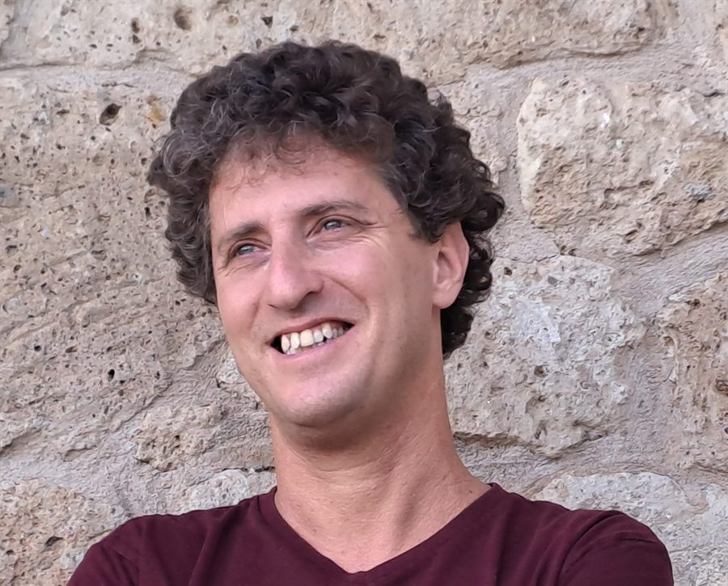

English | עברית
גיא חצרוני
עמית אלון, החוג לפילוסופיה, אוניברסיטת חיפה
אני פילוסוף של המדע ומרצה בכיר בחוג לפילוסופיה באוניברסיטת חיפה. בפילוסופיה של המדע המחקר שלי עוסק בהצדקה של שיטות מתמטיות בהקשר של בניית תיאוריות ומודלים, ובגישות נטורליסטיות לתחום. בהיסטוריה ובפילוסופיה של הפיזיקה אני חוקר את תורת הקוונטים, את עקרונות הסימטריה והאינווריאנטיות, ואת היסודות המושגיים של תורות כבידה יחסותיות. עבודות שאני מקדם בימים אלה עוסקות גם בפילוסופיה של הביולוגיה ובאפיסטמולוגיה של מחלוקות מדעיות.
מאמרים והרצאות מוקלטות
- מציאות פיזיקלית, ייצוג מתמטי ועקרונות פילוסופיים: על מאמר EPR והשפעתו. מאמר בכתב העת עיון 68 (2020), שליווה את פרסום תרגום המאמר המקורי של איינשטיין, פודולסקי ורוזן לעברית מאת בניימין אייזנר (JSTOR).
- על הופעתה של המהפכה הקוונטית השניה. הרצאה במסגרת יום עיון לציון מאה שנים לתורת הקוונטים, מרכז המחקר באסטרופיסיקה, האוניברסיטה הפתוחה, 2026.
- תורת היחסות הכללית והמחשבה המדעית: האם למדנו את הלקח הנכון? הרצאה בסמינר המחקר של מכון כהן, אוניברסיטת תל אביב, 2023.
- עקרונות סימטריה בפיסיקה: בין ייצוגים מתמטיים לרעיונות פילוסופיים. הרצאת "הא ודע" במחלקה למדעי הטבע, האוניברסיטה הפתוחה, 2020.
תכנים נוספים
- זמן בפיזיקה. שיחה עם פרופ' תמר הרמן ופרופ' יורם קלמן בפודקאסט "אדרבא" של האוניברסיטה הפתוחה וגלי צה"ל.
- זמן וסיבתיות בפיסיקה. פורסם ב"על הזמן", גיליון מיוחד לכבוד 40 שנה לאוניברסיטה הפתוחה.